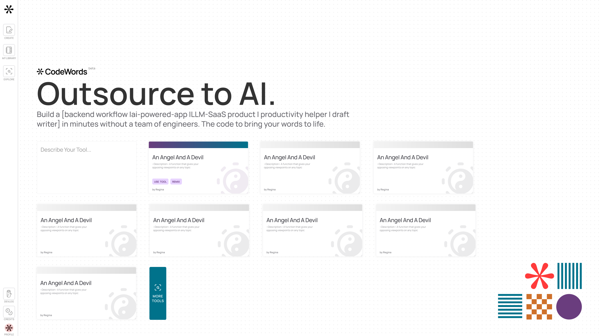

What is X?A question on the board, before any headline.
“Tell me what I want and I will want it”Another note, on the same board.
Outsource to AI.Not a name for the thing. Something you get to do.

Nine names for the thing, and none of them made anyone want it. We write the headline as a design problem, until the product fits inside it.